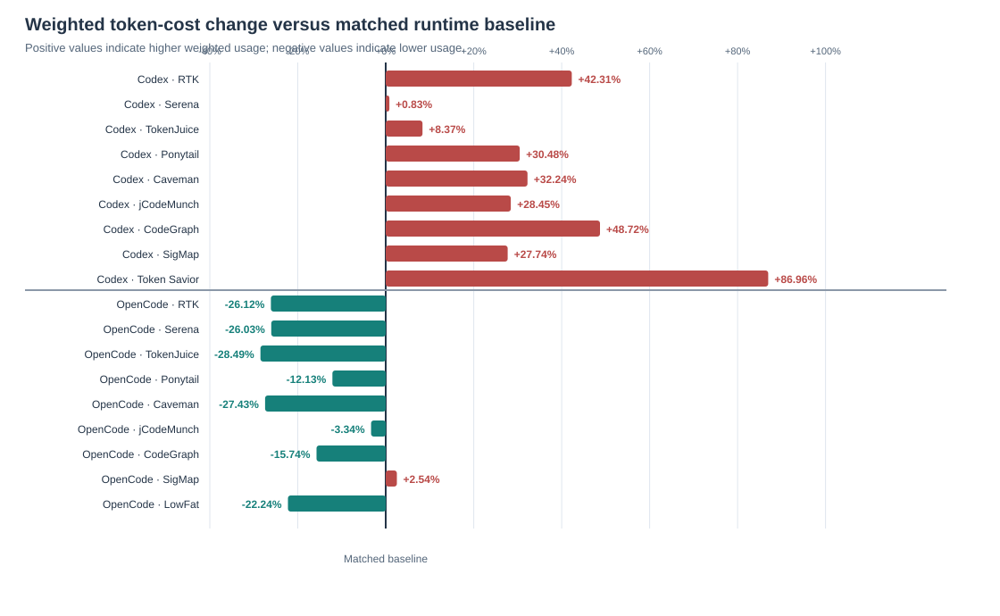
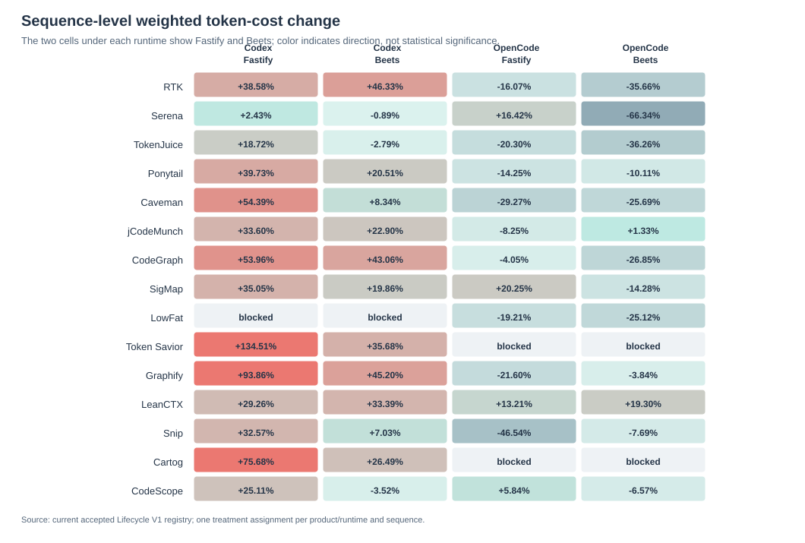
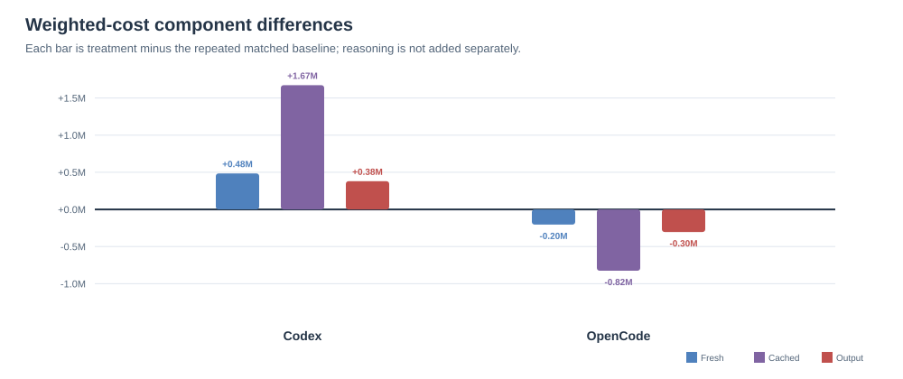

Fastify and Beets: one TypeScript project and one Python project.
Phase 2 · Lifecycle V1 screening
Token-saving tools do not save tokens everywhere.
A matched screening study across two coding-agent runtimes found lower weighted token cost in 11 of 13 OpenCode conditions—and none of 14 Codex conditions.
+35.10%Codex aggregate weighted token cost
−14.02%OpenCode aggregate weighted token cost
162Accepted tasks across 54 persistent sessions
15Token-saving products evaluated
The central finding
Runtime mattered as much as the tool.
The same class of integration could reduce context in OpenCode while increasing weighted cost in Codex. Automatic interception, retrieval depth, persistent instructions, tool schemas, and trajectory changes are plausible contributors—but this screen does not isolate them causally.
What the data supports: token-saving integrations should be evaluated in the exact runtime and integration surface where they will be deployed.

Experimental design
Normal use, persistent sessions, matched controls.
Every condition used the product’s documented native integration without evaluator-forced tool calls. Each session carried state through feature implementation, behavior-preserving refactoring, and code review/correction.
Three sequential tasks in one persistent agent session.
14 Codex profiles and 13 OpenCode profiles with runtime-matched controls.
Fresh input + 0.1 × cached input + 6 × output.
All 162 reported tasks passed the active compile-based acceptance checks.
Frozen 2026-08-08 registry and recoverable workflow artifacts.
Product results
The direction often flipped across runtimes.
These are descriptive treatment-to-baseline deltas. They are not a stable leaderboard: the repeated controls do not create 27 independent baseline replicates, and product uptake was not experimentally isolated.
| Product | Codex Δ | OpenCode Δ | Codex tasks | OpenCode tasks |
|---|---|---|---|---|
| RTK | ↑ 42.31% | ↓ 26.12% | 6/6 | 6/6 |
| Serena | ↑ 0.83% | ↓ 26.03% | 6/6 | 6/6 |
| TokenJuice | ↑ 8.37% | ↓ 28.49% | 6/6 | 6/6 |
| Ponytail | ↑ 30.48% | ↓ 12.13% | 6/6 | 6/6 |
| Caveman | ↑ 32.24% | ↓ 27.43% | 6/6 | 6/6 |
| jCodeMunch | ↑ 28.45% | ↓ 3.34% | 6/6 | 6/6 |
| CodeGraph | ↑ 48.72% | ↓ 15.74% | 6/6 | 6/6 |
| SigMap | ↑ 27.74% | ↑ 2.54% | 6/6 | 6/6 |
| LowFat | Blocked | ↓ 22.24% | — | 6/6 |
| Token Savior | ↑ 86.96% | Blocked | 6/6 | — |
| Graphify | ↑ 70.45% | ↓ 12.49% | 6/6 | 6/6 |
| LeanCTX | ↑ 31.24% | ↑ 16.33% | 6/6 | 6/6 |
| Snip | ↑ 20.29% | ↓ 26.61% | 6/6 | 6/6 |
| Cartog | ↑ 52.02% | Blocked | 6/6 | — |
| CodeScope | ↑ 11.34% | ↓ 0.52% | 6/6 | 6/6 |
Arrows show direction relative to the matched runtime baseline, not product quality. “Blocked” means no qualified provider-backed condition was run.

Mechanism hypotheses
Why might the tools behave differently?
The token components identify where cost changed, not why. These explanations are consistent with inspected source and retained traces; targeted ablations and replication are still required for causal claims.
Automatic interception can pay
OpenCode-native hooks and plugins can filter terminal output without waiting for the model to choose a special command. RTK, TokenJuice, Snip, and LowFat are consistent with this pattern.
Focused retrieval must displace reading
Symbol or graph retrieval helps only when bounded results replace enough broad file context to repay schemas, instructions, indexes, and extra tool turns.
Broad integrations carry fixed cost
Multi-surface products can add persistent guidance, schemas, memory, and tool traffic. On short tasks, that overhead may exceed local compression gains.
Per-tool discussion
What each result might mean.
Open each tool for the concise evidence-bounded interpretation. The linked technical report contains component deltas and source dossiers.
RTK Codex +42.31% · OpenCode −26.12%
RTK filters eligible shell output. The split is consistent with OpenCode’s automatic native plugin outperforming instruction-dependent Codex routing, which included unsupported pass-through forms.
Serena Codex +0.83% · OpenCode −26.03%
Language-server retrieval was nearly neutral in Codex and lower-cost in OpenCode, consistent with targeted symbols displacing more broad reading in the latter runtime.
TokenJuice Codex +8.37% · OpenCode −28.49%
Automatic command-output reducers align with the OpenCode reduction. In Codex, filtering was outweighed by hook, cache, or trajectory effects.
Ponytail Codex +30.48% · OpenCode −12.13%
Ponytail changes implementation policy rather than compressing an input stream. Persistent guidance can alter planning and tool trajectories, making activation runtime-specific.
Caveman Codex +32.24% · OpenCode −27.43%
Caveman compresses assistant prose rather than shell output or retrieved code. Codex showed no clear behavioral activation; the OpenCode reduction could reflect terser responses or a shorter trajectory.
jCodeMunch Codex +28.45% · OpenCode −3.34%
Token-budgeted symbol retrieval must repay a sizeable MCP schema and guidance surface. It nearly broke even in OpenCode but did not in Codex.
CodeGraph Codex +48.72% · OpenCode −15.74%
Bounded graph queries plausibly displaced file reads in OpenCode. In Codex, graph instructions, returned context, or additional turns exceeded avoided reading.
SigMap Codex +27.74% · OpenCode +2.54%
Neither runtime showed a meaningful reduction. The evaluated tasks may have been navigable with native search, leaving index and returned-map overhead unrepaid.
LowFat OpenCode −22.24%
A narrow automatic command filter reduced OpenCode context without requiring a retrieval decision. No qualified native Codex condition exists for comparison.
Token Savior Codex +86.96%
The broad retrieval, indexing, memory, summary, and shell surface added more weighted cost than it removed. This integrated treatment cannot identify the responsible component.
Graphify Codex +70.45% · OpenCode −12.49%
OpenCode’s always-on graph guidance may have displaced some exploration. In Codex, graph and guidance overhead was not repaid by avoided source reading.
LeanCTX Codex +31.24% · OpenCode +16.33%
Its broad hybrid surface spans retrieval, compressed reads, shell output, memory, and indexing. Both runtimes incurred more weighted cost; component ablation is needed.
Snip Codex +20.29% · OpenCode −26.61%
Command-specific output rewriting aligns with the OpenCode reduction. The Codex increase could reflect lower rewrite coverage, pass-throughs, or a longer recovery trajectory.
Cartog Codex +52.02% · OpenCode blocked
Indexed navigation and task-context bundles cost more than they displaced in Codex. OpenCode was excluded before execution after artifact-identity verification failed.
CodeScope Codex +11.34% · OpenCode −0.52%
Graph/search and output archiving were effectively neutral in OpenCode and modestly higher in Codex. A near-zero single-run delta is not a stable win.
Token accounting
Cached input drove most of the weighted difference.
Weighted token cost is a declared accounting convention—not dollars: fresh input + 0.1 × cached input + 6 × output. Reasoning is already included within output and is not added twice.

Limitations
Read the boundary before the headline.
This study is designed as a screening experiment. Its strongest contribution is showing that runtime-specific evaluation is necessary—not selecting a universal winner.
- Each product/runtime condition has one treatment assignment per workflow; there is no within-condition replicate.
- Repeated baselines are descriptive and do not provide 27 independent control pairs.
- The workloads cover two projects and two languages; results may not generalize to other repositories or task families.
- Weighted token cost is an accounting convention, not monetary cost.
- The accounting does not identify the exact trajectory step that caused a difference.
- Compile success does not establish equal maintainability, latency, memory use, or correctness outside the frozen contracts.
- Cross-runtime contrasts are not a causal comparison of Codex versus OpenCode.
Open evidence
Inspect the report, data, and workflow artifacts.
The result is backed by a machine-readable registry, a frozen derived dataset, compact workflow evidence, and product source dossiers.
Technical reportMethods, exact tables, per-tool interpretation, and limitations
Derived report datasetFrozen JSON used to generate the publication report
Authoritative registryWorkflow sessions, conditions, and evidence references
Workflow evidenceRecoverable run artifacts, manifests, and final changes